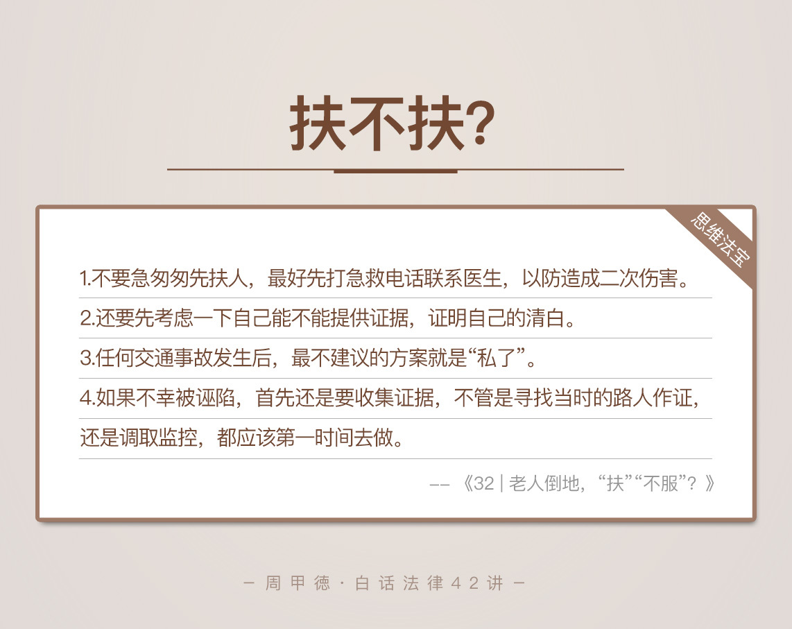

- 00 开篇词 这年头，你真应该懂点法律常识.md
- 01 “老周，我想知道” 常见法律认知盲区（一）.md
- 02 “老周，我想知道” 律师就在你身边（二）.md
- 03 “老周，我想知道” 律师就在你身边（三）.md
- 04 “老周，我想知道” 律师就在你身边（四）.md
- 05 创业未捷老板跑，社保工资哪里讨？.md
- 06 保密还是“卖身”，霸王条款怎么看？.md
- 07 编造流言蹭热度？看守所里降温度！.md
- 08 合同在手欠款难收，报警有用吗？.md
- 09 致创业：谁动了我的股权？.md
- 10 又见猝死！工“殇”究竟是不是工伤？.md
- 11 期权的“前世今生”.md
- 12 裁员面前，你能做的还有什么？.md
- 13 抄袭、盗图为什么做不得？.md
- 14 加班、工资、休假，你知道多少？.md
- 15 受贿原来这么“容易”.md
- 16 今天你用“VPN”了吗？.md
- 17 漏洞在眼前，可以悄悄破解吗？.md
- 18 “爬虫”真的合法吗？.md
- 19 非法集资到底是个啥？.md
- 20 黄色网站？不仅仅是“黄色”罪名.md
- 21 谁修改了我的积分资产？.md
- 22 外挂真能大吉大利吗？.md
- 23 如何看待“从删库到跑路”？.md
- 24 “伪基站”是你的避风港吗？.md
- 25 “网络诈骗”真的离你很远吗？.md
- 26 智斗中介：“北上广”租房图鉴.md
- 27 买买买！买房的“避坑”指南.md
- 28 闪婚又闪离，彩礼怎么理？.md
- 29 离婚还想和平？你要这么做.md
- 30 遗产继承的爱恨情仇.md
- 31 骗术升级？假结婚、假离婚的那些事儿.md
- 32 孩子学校受伤，谁之过？.md
- 33 如何让欠债还钱真正“天经地义”？.md
- 34 从透支到盗刷：人人须知的银行卡纠纷.md
- 35 远离“套路贷”的套路大全.md
- 36 危险！酒驾为什么被罚那么重？.md
- 37 老人倒地，“扶”“不服”？.md
- 38 “能动手就别吵吵”，代价你真的知道吗？.md
- 39 发生交通事故，如何处理？.md
- 40 交通事故综合法宝.md
- 41 婚姻家庭综合法宝.md
- 42 买卖房屋综合法宝.md
- 一键直达 法律专栏“食用”指南.md
- 加餐 “新冠肺炎”影响下，17个常见法律问题解答.md
- 结束语 法律，不会终止的篇章.md
37 老人倒地，“扶”“不服”？
老人摔倒了，扶不扶？这一直都是个不小的社会问题，也是不少人茶前饭后谈论的“八卦”。这类事情大规模引起注意，应该是因为2014年春晚上，一个叫《扶不扶》的小品。
小品的主人公叫郝建，在马路上好心扶起了摔倒的老人，却反被老人污蔑为撞人者。而在处理事故的过程中，路人的自白更是让人心酸，说自己以前家财万贯开大奔，就因为扶过三个老人，现在只能骑得起自行车。最后，还是交警的到来才还了郝建的清白。
其实生活中就有不少这个小品的原型。新闻上就曾经报道，四川彭州的一个老人，骑自行车过马路时不小心摔倒，一个路过的学生热心地扶起了老人，却遭到老人的诬陷，和随后赶来的老人家属的指责。最后的结局，同样是公安局调取监控，才证明了扶人者的清白。
这些结局似乎都让我们寒心，试想一下，在小品里，如果没有交警的出现来证明清白，结果会怎样呢？郝建的生活也要像路人一样，从大奔沦落为自行车吗？
现实生活中，这个四川的学生，如果没有监控作证，也要平白无故惹一身祸吗？“郝建们”遇到的，只是不知道真相才冤枉人的老人，但是那个四川老人可就是明晃晃地讹人了。碰到这些情况，我们该怎么办呢？像路人一样，发个微博，然后拍拍屁股走人吗？
正如小品里说到的，“这人倒了咱不扶，那人心不就倒了吗？人心要是倒了，咱想扶都扶不起来了”。老人自然是应该帮助的，但是，害人之心不可有，防人之心不可无。做好事可以不留名，但也不能平白无故留下污名，而这也正是法律能够给你提供保护的地方。
今天，我就从法律的角度，来给你分析一下，遇到老人倒地的问题要怎么扶。
第一种情况，遇到老人摔倒，要怎么办？
帮忙是一定要帮的，但是怎么帮就比较有讲究了。在出手扶老人前，你一定要有这么两个意识。
不要急匆匆先去扶人，最好先打急救电话联系医生，以防给老人造成二次伤害。
考虑一下自己能不能提供证据，证明自己的清白。
“不要贸然先扶人”这一点，主要是为受伤者考虑。其实不仅仅是倒地老人，遇到其他病人或者伤患倒地的情况，也是一样的处理原则。
如果伤者意识清楚，先问清楚伤者摔倒的情况以及记忆是否清晰。如果伤者已经想不起来了，可能是脑血管相关的疾病，更不能贸然移动，应该立刻报警或者打“120”急救电话，并在附近尝试呼救，寻求专业人士帮忙。
考虑证据这一点，倒不是不顾人和人之间基本的信任，故意把人往坏处想。实际上，很多时候，上了年纪的人在路上走着，一分神儿可能真没注意到，到底是谁把他给撞倒的。这时候你来帮忙，他会下意识地认为，如果不是你撞的，为什么就你来帮忙。
所以，我们做好人好事，前提一定要明确责任，能够自保，这也是好人好事行为的基本原则。
综合来说，如果是在白天发现老人摔倒，一般周围会有其他路人，你就可以向其他人求助一起帮忙。哪怕对方不愿意一起伸手，也可以让路人帮忙摄像，这样你就可以安心出手了。
先观察一下老人的情况，如果问题比较轻，可以直接扶起老人；如果不好判断，可以先帮忙联系老人的家人，并且拨打“120”急救电话求助。
如果是在晚上发现老人摔倒，周围估计也没有其他人，那你可以打开GPS定位，并且自己录制视频。同样的，要先观察清楚，如果不好判断，可以暂且保持一定距离，及时报警或者打“120”急救电话。条件允许的话，最好还是先联系到老人的家人，再进行处理。
第二种情况，遇到发生交通事故的老人，要怎么办？
这种情况，相对来说更好解决，你也能清楚判断出，究竟是不是交通事故。
如果你只是路人角色，你可以及时为受伤老人提供帮助，比如说报警、打“120”、维持秩序、联系家人等。这里面需要注意的就是，如果你没有开车，自然能轻松洗清嫌疑。如果你本身开了车，别把自己的车停在事故发生地，防止招惹是非。
如果你是交通事故的当事人，首先千万不要逃跑，肇事逃逸的罪名就很严重了。第一时间还是应该报警、打“120”，及时让警方和医生介入。报警是为了查明事故的真相，找医生是为了第一时间提供救助，这样也可以杜绝“碰瓷”现象。
另外，任何交通事故发生后，最不建议的方案就是“私了”。举个例子，有个老人闯红灯，结果被你正常开车给撞到了。按理来说，你不用负责，而老人也承认这是自已的问题，让你先走。可是，万一你走后，再被老人反咬一口，没有证据的话，岂不成了肇事逃逸吗？
其实，还是那句话，证据为王。如果事情发生后，你能找到证据（比如视频、录音、证人证言等），证明不是自己的责任，离开现场自然无可厚非。
如果你不能证明这一点，为了不留后患，最好还是要及时报警，彻底解决问题。
第三种情况，已经救了人，却反被诬陷，要怎么办？
如果不幸被诬陷，首先还是要收集证据，不管是寻找当时的路人作证，还是调取监控，都应该第一时间去做。
如果更加不幸，找不到证据来证明自己的清白，我有这么两点建议。
第一，诉讼要坚持“谁主张谁举证”。单方面的诬陷口说无凭，想要让你负责，被救方必须提供充分的证据，能证明你伤害了他。这样，被救方很可能因为举证不明而败诉，你也可以避免不能提供证据、证明自己清白的责任。
第二，诉讼要拒绝息事宁人。法院不是万能的审判者，也有可能在证据不足的情况下，做出不严谨的判断，让你们和解来解决。这种情况下，态度要坚决，不能背锅、也不能宽容，应该坚决上诉。 宽容未必结出善良之花，公平公正才是基本的保障。

诚然，我们都会变老，都有成为老人的那一天，换位思考下，如果我们在路上不小心摔倒了，半天爬不起来，路过的也没人理睬，该是多么悲凉的事情。
但是，人心本就是复杂的。“扶不扶”本是最基本的道德问题，现在却成了让人揪心的社会问题。
我想，一方面是因为人们朴素的好人观，大家都只考虑善良的本心，却没有法律风险意识；另一方面，也是因为社会对“陷害者”们的处罚太轻了。这类事件大多都是批评教育了事，很少对陷害者做出严重惩罚。
当然，法律在这方面也是缺失的，所以，我们还是要从自身做起，最大程度降低风险，安全地做好人好事。
今天的内容主要就是这些，关于扶老人，你有什么经历和感想吗？欢迎留言和我分享，也欢迎你把这篇文章分享给你的家人朋友，特别是家里的小孩。善良，是一种智慧，不应该成为被坏人利用的武器。
© 2019 - 2023 Liangliang Lee. Powered by gin and hexo-theme-book.